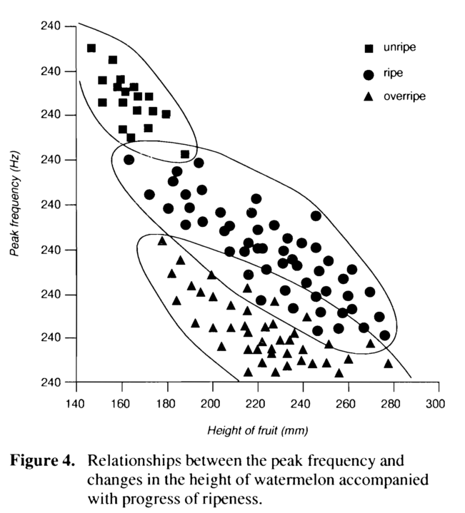
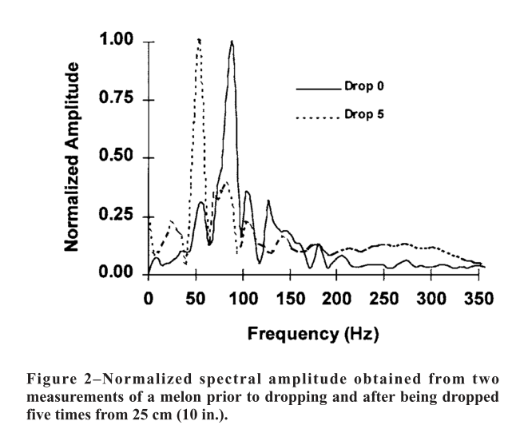

如何挑西瓜：一个å¦ç‰©ç�†çš„å�ƒè´§çš„感言
西瓜是一ç§�很甜ç¾�的食物。当然，å�šä¸ºä¸€ä¸ªå¦ç‰©ç�†çš„å�ƒè´§ï¼Œæˆ‘一定ä¸�会白白浪费西瓜的。所以，本文的宗旨是，如何在ä¸�ç ´å��西瓜的å‰�æ��下，了解西瓜的甜ç¾�程度。
西瓜的生物å¦åŸºç¡€çŸ¥è¯†
西瓜是ä¸�是好å�ƒï¼ŒåŸºæœ¬ä¸Šæ˜¯ç”±å�«ç³–é‡�决定的。而溶液的å�«ç³–é‡�，这里的糖是指的我们能够å�ƒå‡ºç”œå‘³çš„糖，例如葡糖糖，æ�œç³–。当然西瓜本身有大é‡�çš„å¤šç³–â€”â€”çº¤ç»´ç´ ï¼Œè¿™æ˜¯è¥¿ç“œç»†èƒ�å£�的主è¦�æˆ�分，更是西瓜瓜瓤的主è¦�æˆ�分。西瓜有大é‡�的瓜瓤，å�¯æ˜¯æˆ‘们å�ƒçº¤ç»´ç´ ，那是没什么å�£å‘³çš„。幸è¿�的是，西瓜æˆ�ç†Ÿçš„æ—¶å€™ï¼Œçº¤ç»´ç´ è¢«çº¤ç»´ç´ é…¶é™�è§£äº†ï¼Œç“œç“¤è¢«ç ´å��，细èƒ�å°±æˆ�äº†æ•£æ²™ä¸€æ ·ã€‚å�Œæ—¶ï¼Œè¿™äº›è¢«çº¤ç»´ç´ 被é™�解，有了我们甜甜的葡è�„糖。
西瓜的物�特性
我们关心的是西瓜的力å¦æ€§è´¨å’Œå£°å¦æ€§è´¨ï¼Œæ‰€ä»¥å�ªéœ€è¦�考虑一组é‡�å°±å�¯ä»¥äº†ï¼Œé‚£å°±æ˜¯å¼¹æ€§æ¨¡é‡�。
有了弹性模é‡�，我们å�¯ä»¥å¾—åˆ°å‡ ä¹�所有西瓜本身的力å¦å’Œå£°å¦æ€§è´¨ã€‚
所以ç�°é˜¶æ®µæƒ³è¦�通过力å¦å’Œå£°å¦é‰´å®šè¥¿ç“œå“�质，一定è¦�é� 拢到弹性模é‡�上æ�¥æ‰�é� 谱。
而我们之�了解到，西瓜的�熟，西瓜的瓜瓤�解，葡�糖的��是相关的：西瓜�熟，�味�瓜瓤�解为葡糖糖。
瓜瓤é™�è§£æ˜¯å¾ˆå…³é”®çš„ä¸€ç‚¹ï¼Œå› ä¸ºç“œç“¤é™�解改å�˜äº†è¥¿ç“œçš„结æ�„，这会对西瓜的力å¦æ€§è´¨é€ æˆ�很大的影å“�。
当然这是�论上的，而�验上也确�有数�支�这一说法。
我们总结一下西瓜的�性[1] [2]。
| �熟 | �熟 | |
|---|---|---|
| 密度 | 大 | � |
| 硬皮内侧弹性模é‡� | – | – |
| 瓜瓤最外层弹性模�  | 大    | �  |
| 瓜瓤ä¸é—´å¼¹æ€§æ¨¡é‡�   | 大   | å°�  |
| 瓜瓤ä¸å¿ƒå¼¹æ€§æ¨¡é‡�   | 大   |  å°�   |
| å�Œæ ·çš„西瓜共振基频 | 高    | ä½�   |
这些特性导致了相å�Œå“�ç§�ã€�相å�Œè´¨é‡�的西瓜，共振的频ç�‡ä¸�å�Œï¼Œè¿™æ ·æˆ‘们å�¯ä»¥é€šè¿‡å¯¹ç…§åŸºé¢‘æ�¥æŒ‘西瓜，基频越å°�，西瓜越好。
ç‰ä¸€ä¸‹ï¼Œè¥¿ç“œè¶Šå¤§ï¼Œå…±æŒ¯é¢‘ç�‡ä¹Ÿè¶Šå°�。所以我们也è¦�考虑西瓜的大å°�ã€‚ä»¥ä»€ä¹ˆä¸ºæ ‡å‡†å‘¢ï¼Ÿæˆ‘ä»¬å�¯ä»¥ä»�振动方程ä¸å¾—出，西瓜的弹性模é‡�
$E\propto f^2 m^{2/3}$，
而我们å‰�é�¢å¾—知ä¸�熟和æˆ�熟的西瓜之间的的瓜瓤的弹性模é‡�差别很大。并且，弹性模é‡�æ˜¯æ›´åŠ æœ¬è´¨çš„ä¸€ä¸ªç‰©ç�†é‡�。所以我们就直æ�¥ç”¨ $f^2 m^{2/3}$ æ�¥ä½œä¸ºè¥¿ç“œçš„è´¨é‡�æ ‡å‡†ã€‚ï¼ˆè¯´å®�è¯�，这里 $f^2 m^{2/3}$ 并ä¸�是唯一的选择 [3] ，或许是一个更好的æ€�è·¯ï¼Œå› ä¸ºæˆ‘ä»¬å¹¶ä¸�确定弹性模é‡�是ä¸�æ˜¯æœ€å¥½çš„æ ‡æ�†ï¼Œæˆ‘们å�ªæ˜¯çŸ¥é�“我们所知的物ç�†é‡�里é�¢è¿™ä¸ªæ˜¯æœ€ä¼˜çš„。）
弹性模�对�西瓜的振动模�的影�也�以直�看西瓜在一个�始的驱动下的振动演化。西瓜被敲击之�，振动�声，而这部分振动�声，会�时间演化，有个振动波形。
有一些论文是以这个为基础的。我们ä¸�是è¦�è‡ªå·±æƒ³ç ”ç©¶ï¼Œè€Œæ˜¯è¦�建立一个比较直观的物ç�†æ„Ÿè§‰ã€‚所以直æ�¥å�–å‡ å¼ æˆªå›¾è¿‡æ�¥ï¼Œæˆ‘们感å�—一下：

这是对äº�一个æ£å¸¸è¥¿ç“œçš„检测。æ£å¸¸æ„�味ç�€æ²¡æœ‰æ�Ÿå��，没有空心，没有蛀虫。
è¿™æ ·çš„è¥¿ç“œçš„æ³¢å½¢æ˜¯æ¯”è¾ƒæ¼‚äº®çš„ï¼Œå¯¹ç§°æ€§æ¯”è¾ƒå¥½ã€‚ä¸ºä»€ä¹ˆå¯¹ç§°æ€§æ¯”è¾ƒå¥½å‘¢ï¼Œå› ä¸ºè¥¿ç“œæœ¬èº«çš„å¯¹ç§°æ€§æ¯”è¾ƒå¥½ï¼Œæ‰€ä»¥å�„个振动模å¼�也比较漂亮。
我们比较关心功ç�‡è°±ï¼Œå› 为功ç�‡è°±å†³å®šäº†æˆ‘们å�¬åˆ°çš„声音的音色和感å�—到的频ç�‡ã€‚功ç�‡è°±åœ¨ä½�é¢‘çš„æ—¶å€™ï¼Œæœ‰å‡ ä¸ªæ¯”è¾ƒæ˜�显的峰值。

这是一个空心西瓜的检测。这个波形好丑陋。对称性ä¸�å¥½ï¼Œå› ä¸ºè¥¿ç“œæœ¬èº«å�¯èƒ½å› 为空心å�˜å¾—ä¸�那么对称。ä¸�å�ŒæŒ¯åŠ¨çš„模å¼�æ�Ÿå¤±æƒ…况也比较特殊，ä¸�空心部分的形状大å°�有关。我们å†�看功ç�‡è°±ï¼Œå�Ÿæ�¥æ£å¸¸çš„西瓜有一个æ˜�显的最高的峰值，ç�°åœ¨å�˜å¾—ä¸�那么æ˜�显了。就是说，å�Ÿæ�¥å�¯èƒ½å¤šå°‘有点å��干瘪的音å�‰çš„感觉，ç�°åœ¨å�˜å¾—æ˜¯æ›´åŠ æœ‰å’Œå¼¦çš„æ„Ÿè§‰ã€‚
当然ä¸�是所有的å®�验都åƒ�è¿™ç¯‡æ–‡ç« ä¸€æ ·æ¼‚äº®ï¼Œæœ‰çš„å®�éªŒä¼šå¾—åˆ°è¿™æ ·çš„ç»“æ�œ [4]


虽然看起æ�¥ä¹±äº›ï¼Œä½†æ˜¯å®�è´¨å�´æ˜¯ä¸€æ ·çš„，å�³ï¼ŒåŠŸç�‡è°±åœ¨ä½�é¢‘é˜¶æ®µæœ‰å‡ ä¸ªæ ‡å¿—æ€§çš„å³°å€¼ã€‚è¿™ä¸ªæ–‡ç« æ²¡æœ‰é��æ£å¸¸ç“œçš„波形很频ç�‡è°±å¯¹ç…§ï¼Œç¨�显å�¯æƒœã€‚
�货的本质
å¦ç‰©ç�†ï¼Œéš¾é�“ä¸�是为了å�ƒä¸Šæ›´å¥½çš„西瓜么？
所以，喂，上�那个西瓜，哦�对，上�那个图表，
| �熟 | �熟 | |
|---|---|---|
| 密度 | 大 | � |
| å�Œæ ·çš„西瓜共振基频 | 高    | ä½�   |
我们�看看我们人类的�力：

太棒了，上一部分我们看到的西瓜振动的功ç�‡è°±ä¸ï¼Œå‡ 个比较大的峰值在 20Hz 之上了，所以我们å�¯ä»¥åˆ†è¾¨è¿™å‡ 个峰值。å�¬å£°è¾¨è¥¿ç“œï¼Œæ˜¯å�¯èƒ½çš„。
å…·ä½“æœ‰ä»€ä¹ˆè§„å¾‹å‘¢ï¼Ÿæˆ‘ä»¬æœ‰å¼ å›¾æ�¥è¡¨ç¤º[5]

（请尽情的å��æ§½è¿™å¼ å›¾çš„çºµå��æ ‡ã€‚ä¸¥æ ¼æ�¥è¯´ï¼Œå�³ä¾¿æˆ‘们这里å�ªå®šæ€§çš„ç”¨è¿™å¼ å›¾ï¼Œä¹Ÿä¸�行。ä¸�è¿‡é€šè¿‡å…¶ä»–çš„æ–‡ç« å�¯ä»¥å¾—知，å®�际上这里的纵轴并ä¸�是一些很å°�的间隔，至少是能分辨的。）
所以，基äº�那一大串物ç�†å�Ÿç�†ï¼Œæˆ‘ä»¬å¾—å‡ºè¿™æ ·çš„ç»“è®ºï¼š
æˆ�熟的西瓜，敲击时的声音会比较沉闷。但是西瓜越大，声音也会越沉闷，所以è¦�把西瓜的大å°�考虑进æ�¥ã€‚需è¦�å¤šå¤šç»ƒä¹ ï¼Œæ‰�能很好的æ�Œæ�¡è¿™ç§�方法。
摔了的西瓜�好�
有时候我买了一个西瓜，是熟的，但是�声音也挺沉闷的，但是，这西瓜摔了，�好�啊。
所以，我们能够通过声音辨别出西瓜是å�¦æ‘”过么？ç”案是，我ä¸�知é�“，或许有人能，但是å�Ÿç�†ä¸Šæ�¥çœ‹ï¼Œå¾ˆéš¾ã€‚
Armstrong ç‰äººæ›¾ç»�å�šè¿‡å®�验[6]，其ä¸ä¸€ä¸ªç»“æ�œå¦‚下：

å®�线是指的一个å�Ÿå§‹çš„西瓜的功ç�‡è°±ï¼Œè™šçº¿æ˜¯æŒ‡çš„西瓜被ä»� 25cm 的高度摔下æ�¥ 5 次之å��的功ç�‡è°±ã€‚差别在äº�，摔了之å��，西瓜的功ç�‡è°±å�‘ä½�频移动了。这是一个很令人伤心的的结æ�œï¼Œå› ä¸ºè¿™æ ·çš„è¯�，我们就ä¸�能仅仅挑å�Œä¸€ç±»è¥¿ç“œé‡Œé�¢çš„那些频ç�‡æœ€ä½�çš„é‚£äº›äº†ï¼Œå› ä¸ºè¿™æ ·å�¯èƒ½ä¼šæŠŠæ‘”过的西瓜挑出æ�¥ã€‚
或许，如æ�œæœ‰äººå¯¹æŸ�一类å�‹çš„西瓜é��常熟悉，å�¯ä»¥å‡†ç¡®çš„知é�“ä»€ä¹ˆæ ·çš„å£°éŸ³å¯¹åº”çš„æ˜¯ç”Ÿç“œï¼Œä»€ä¹ˆæ ·çš„å¯¹åº”çš„æ˜¯æ‘”è¿‡çš„ç“œã€‚è¿™å¿…å®šåŸºäº�一些ç»�验，和一幅好耳朵。
�壳的�军�师的结论
è¿™æ ·æŒ‘è¥¿ç“œæœ‰ä½•ç§‘å¦ä¾�æ�®ï¼Ÿ
说了�天，这�是�点��


�考文献
- ç�‹ä¹¦èŒ‚, ç±�ä¿Šæ�°, 焦群英 西瓜æˆ�ç†Ÿåº¦æ— æ�Ÿæ£€éªŒçš„冲击振动方法， 《农业工程å¦æŠ¥ã€‹,1999, 15(3) 241 ↩
- 　Koro Kato, Electrical Density Sorting and Estimation of Soluble Solids Content of Watermelon， Journal of Agricultural Engineering Research, Volume 67, Issue 2, June 1997, Pages 161-170, ISSN 0021-8634. ↩
- Abbott, J.A., Affeldt, H.A., and Liljedahl. 1992. Firmness measurement of stored ‘delicious’ apples by sensory method, Magness-Taylor, and sonic propagation. Journal of the American Society for Horticultural Science 117:590. ↩
- M. L. Stone, P. R. Armstrong, X. Zhang, G. H. Brusewitz, D. D. Chen, Watermelon maturity determination in the field using acoustic impulse impedance techniques. American Society of Agriculture Engineering, 1996, 39(6) 2325. ↩
- Kouno, Y., Mizuno, T., Maeda, H. & Akinaga, T. Internal quality analysis of watermelons by an acoustic technique and its application in Japan. ACIAR PROCEEDINGS (1993) P392. ↩
- Armstrong, P. R., Stone, M. L. & Brusewitz, G. H. Nondestructive acoustic and compression measurements of watermelon for internal damage detection.Applied engineering in agriculture, 1997, 13, 641–645. ↩

说点儿什么好。。
呃
难得的�论�系�际的好文~
ä½ å¥½ï¼Œè¿™ä½�科å¦å®¶
ä½ å¥½ã€‚
ç»�对是冒牌å�ƒè´§ï¼�ï¼�ï¼�昨天下å�ˆçš„ä¼šè®®ï¼Œè¯¥ä½œè€…å‰©ä¸‹ä¸€å¤§å †å�ƒçš„。好åƒ�一个都没å�ƒå�§ï¼Ÿ
(⊙v⊙)嗯，�货也有挑食的嘛~
ç¢‰å ¡
èƒ½ç ”ç©¶ä¸‹æ€�么泡到软妹å�？
~
zz 如何挑西瓜：一个å¦ç‰©ç�†çš„å�ƒè´§çš„感言
�货也得有文化
带��慢慢看
应该写个西瓜生熟判æ–的应用
å¤�天到了…振动å®�验室å�ˆè¦�派上用场了
貌似很高大上
�
如何挑西瓜：一个å¦ç‰©ç�†çš„å�ƒè´§çš„感言
å¦æœ‰æ‰€ç”¨å•Š